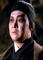

Also known as:李小龍傳奇 (original title)
Country:ZH, 90 minutes
Spoken languages:Mandarin
Genres:Action, Adventure
Director(s):Ng See-Yuen
Writer(s):Ng See-Yuen
Video Codec:Unknown
Number: 896


Certification:R
Storyline:
A highly fictionalized biography of the famous Bruce Lee, this movie traces his college life, his marriage to Linda Lee, his relationship with his master, and his untimely death.
Cast: 


Medium: Original DVD,
Comments: Part of: Martial Arts Masters
Loaned: No
Aspect ratio: Unknown